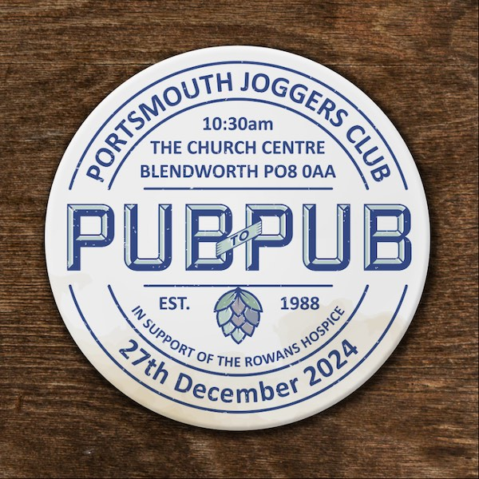

Pub2Pub

Guess what the Pub2Pub 2024 momento might be.
The Pub2Pub is our annual charity run, held between Christmas and New Year, making it the perfect way to run off those mince pies! Established in 1988, the Pub2Pub is a hallmark staple of our running calendar here at PJC, and has a reputation amongst the local running community for being a tough but enjoyable way to close the year. The route has changed over the years and it is no longer technically from pub to pub, however the name has stuck, and who are we to mess with tradition!
The run is approximately 10k along open country roads, before going off-road up towards Windmill Hill, and looping back to the start in Horndean. There is also the option of completing a 5K walk, if running isn't for you. 100% of the profits from this run go to the Rowans Hospice. We hope that you will join us in raising funds for such a fantastic cause.
Pub2Pub 2024
The 2024 Pub2Pub will take place on Friday 27th December at 10:30am.
Enter Here
- All entrants will receive a race momento.
- Race HQ is at the Church Centre, Blendworth Lane, Waterlooville, PO8 0AA.
- Race registration and number collection will be between 09:00 – 10:15am, at race HQ, on race day.
- There is limited car parking at the Church Centre. Additional parking is available off London Road in Horndean and in surrounding roads but please car share where possible and be considerate of local residents when parking.
- The car parks of the local pubs are restricted to customers only. You will incur a parking charge if you park there without being a customer of theirs and registering your vehicle registration at their bar or reception.
For more information, email pub2pub@pjc.org.uk